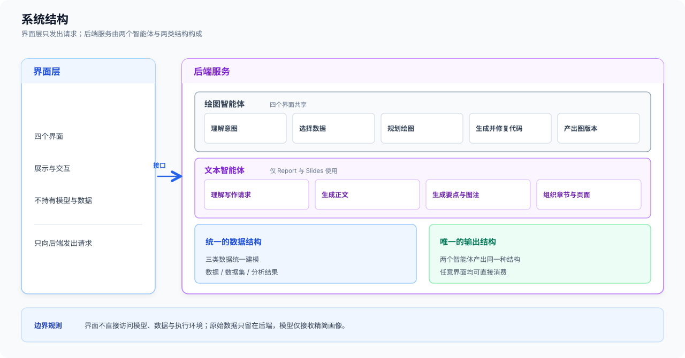
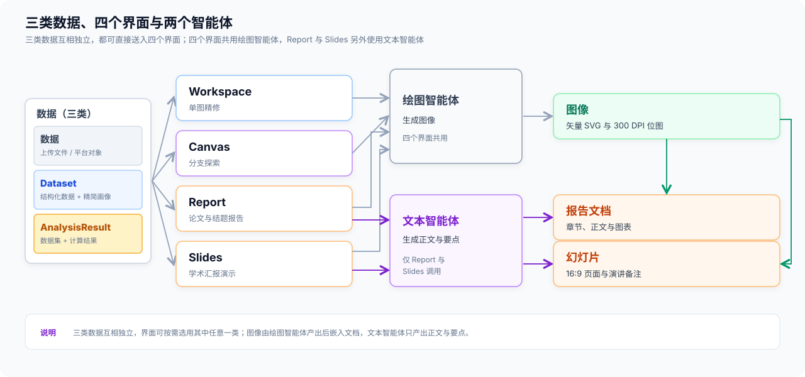
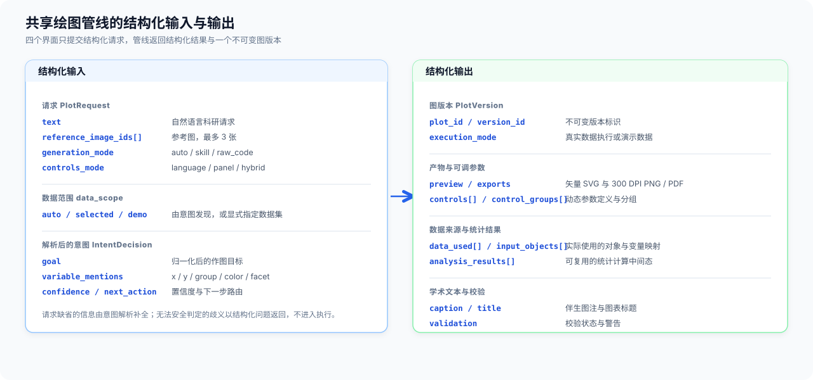
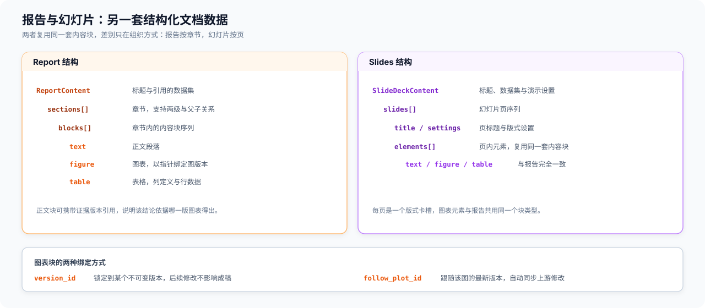
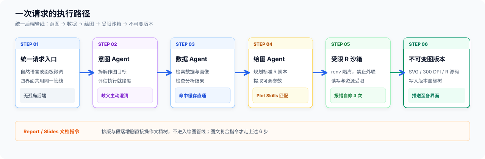
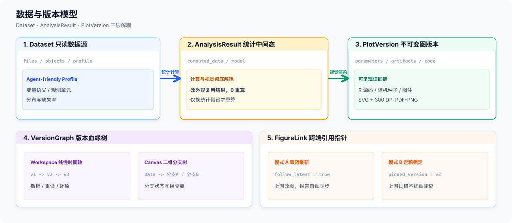
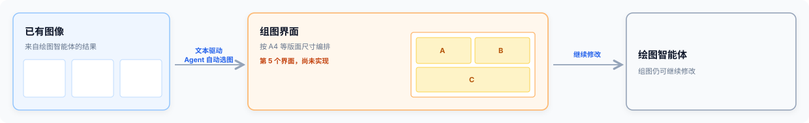
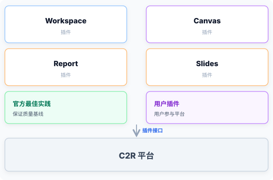
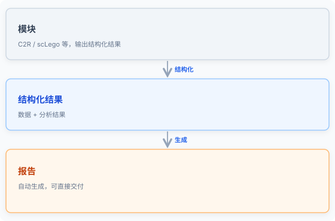

用自然语言产出可发表的科研图表。今天汇报后端结构：绘图智能体与文本智能体，统一的数据结构，唯一的输出结构。
界面层只发出请求；后端服务由两个智能体与两类结构构成

三类数据互相独立，都可直接送入四个界面；四个界面共用两个智能体

不是自由文本进出：左端是结构化请求，右端是结构化结果与不可变图版本

复用同一套内容块，差别只在组织方式：报告按章节，幻灯片按页

六步都在后端完成，前端只通过事件流观察进度

只读数据集 - 可复用统计中间态 - 不可变图版本

模块输出抽象为两类数据模型后，可直接送入绘图智能体
以下为当前已知的边界与未展开的方向

两条相互独立的方向
四个界面可作为 C2R 平台的插件，官方提供最佳实践，用户也可以参与。

模块的结构化结果可直接生成报告。

已交付两个绘图向界面与两个高层可视化界面